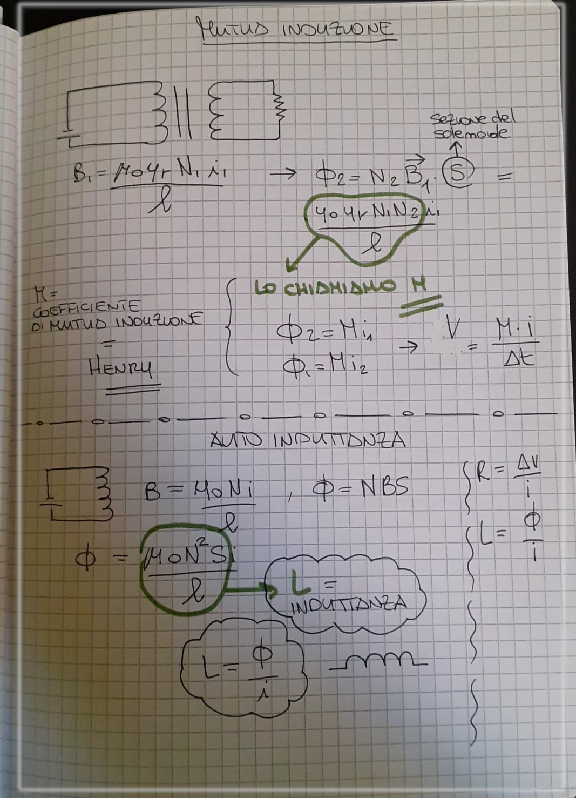
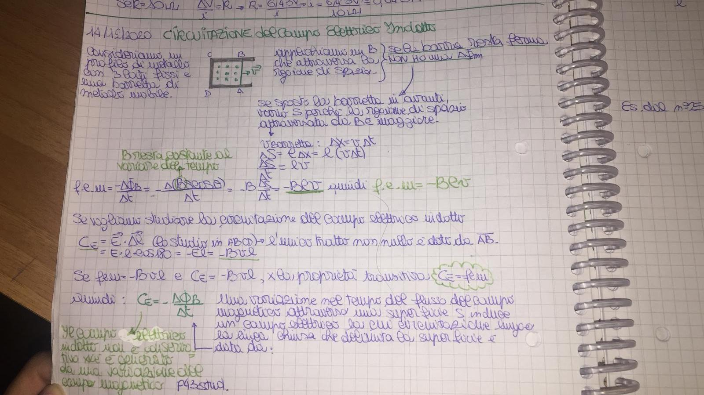
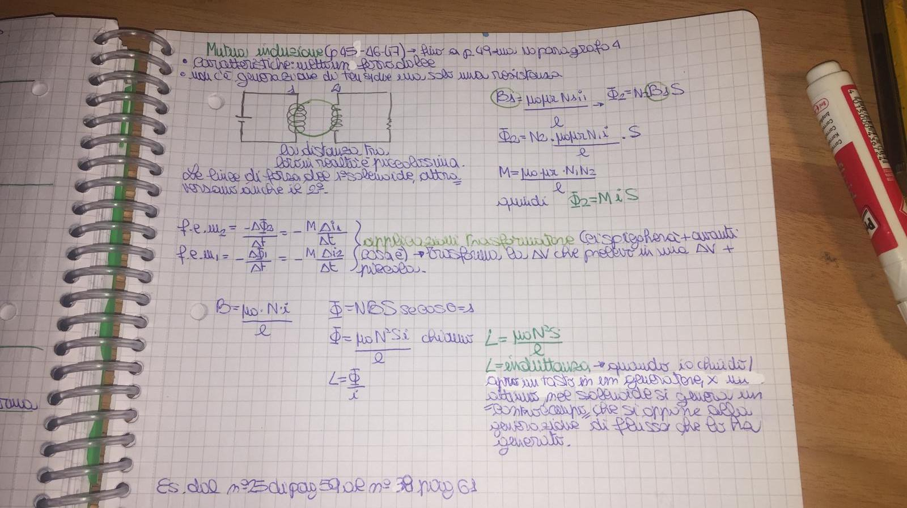

14 gen 2020 - Circuitazione del campo elettrico indotto
TODO Fisica: completare appunti dal libro
Libro
- Not Found: Circuitazione del campo elettrico indotto
- p. 45-49: Mutua induzione e autoinduzione
Circuitazione del campo elettrico indotto


Consideriamo un profilo di metallo, a forma di U, con tre lati rigidi ed un lato libero di muoversi con velocità
TODO Fisica: creare immagine
Si genera un campo magnetico all'interno di questo profilo. Il campo magnetico attraversa la regione di spazio centrale.
Lasciando ferma la parte mobile del profilo, il campo magnetico è costante, quindi non vi è alcuna differenza di flusso, e pertanto la f.e.m. indotta è nulla.
Muovo la parte mobile con velocità : si modifica la superficie attraversata dal campo magnetico.
La differenza di superficie sarà
Calcolando la f.e.m. dato
A questo punto è possibile calcolare la circuitazione, su un percorso ABCD. L'unico contributo non nullo è quello dato dal percorso AB
Visto che i campi elettrici e magnetici sono trasversali, so che
Ho dimostrato che
Questo implica che il campo elettrico indotto ha caratteristiche molto diverse dal campo elettrico generato da una carica in moto: non è conservativo, mentre il campo elettrico generato da una carica in moto era conservativo.
Mutua induzione e autoinduzione
Si abbia un circuito come indicato, con tra i due solenoidi un nucleo di ferro dolce.
TODO Fisica: aggiungere immagine figura 10 p.45
TODO Fisica: aggiungere mutua induttanza sul libro
Vista la poca distanza tra i due solenoidi, parte del campo magnetico del secondo solenoide genera un flusso sulla prima
Abbiamo definito : coefficiente di mutua induzione, la cui unità di misura è l'henry
L'inuttanza è importante. Viene utilizzata nei trasformatori, che trasformano la differenza di potenziale. Perché la tensione diminuisca, si lavora con il numero di spire.
Aggiungere
Screenshot


Altri

